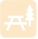
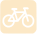

PUNTOS DEL RECORRIDO
EL RECORRIDO
Empezando la ruta en el Ayuntamiento, llegando a la Plaza Duques de la Victoria, por detrás de la iglesia cogemos la calle Manuel Marure que nos llevará a Entrepuentes, zona donde se unen el río Asón y su principal afluente, el río Gándara. Aquí encontraremos un antiguo puente medieval, un molino (ahora propiedad privada) y la presa Don Cecilio.
Siguiendo la carretera atravesaremos una zona ajardinada y área recreativa que nos lleva al Bº Vegacorredor. Una vez aquí subimos por la carretera de la izquierda en dirección al Bº Helguero, el cual atravesaremos y donde podremos visitar la Fuente Iseña, manantial que abastece Ramales.
Siguiendo el camino regresaremos hasta el Humilladero Ánima de Iseña y desde aquí, volveremos por el mismo recorrido hasta la plaza.
INFORMACIÓN ÚTIL

Zona Picnic
Apta para bicicletas¿LISTO PARA CAMINAR?
SEGUIR LA RUTA →